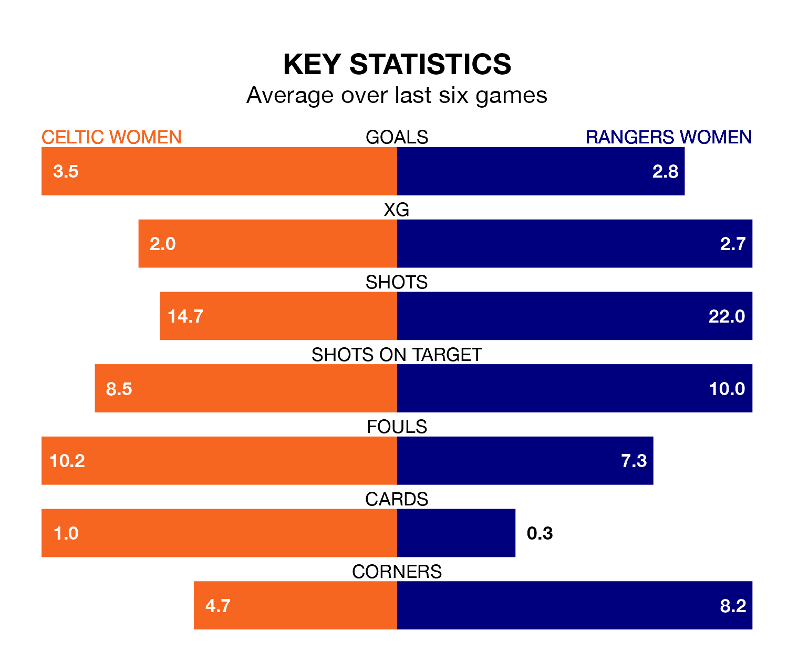

SWPL 1's top two sides face each other at the Excelsior Stadium in Sunday's kick-off, when second-placed Celtic Women host Rangers Women.
Celtic have picked up 18 wins and two draws from 22 games so far this season, and sit four points below the visitors going into the 4.010pm match.
Rangers, meanwhile, have won 19 and drawn three, picking up 60 points.
With 102 goals in 22 games so far this season, Celtic are the league's highest scorers with 4.6 goals per game. And they are conceding fewer than average, letting in 13 goals at a rate of 0.6 per game.
Rangers are also above average scorers, with 4.2 goals per game, compared to a league average of 2.2. They have conceded 0.5 goals per game.
In Amy Gallagher, the home team have the league's most on-form striker so far this season. She has notched 22 goals in 21 appearances.
Her goal rate of one every 79 minutes is quicker than that of Rio Hardy, the visitors' top scorer with a goal every 87 minutes, and a total of 19 goals in 21 games.
In the last 10 years, Celtic and Rangers have played each other on 14 occasions. Celtic won five of them, Rangers six, and they drew three times.
On average, Celtic scored 1.0 goal and Rangers 1.1 in those matches.
Their last meeting was on February 18, when they played out a 1-1 draw.
Celtic are in good form in SWPL 1, with four wins and a draw from their last six games.
With four wins and two draws over that period, Rangers's form is slightly better – they have taken 14 points from 18, compared to Celtic's 13.
Celtic's last match was on March 3, a 6-1 win against Partick Thistle Women, with Gallagher (three), Emma Louise Lawton (own goal), Jennifer Smith and Murphy Agnew getting the goals for Celtic.
Rangers beat Hibernian Women 3-0 last time out, also on March 3, with Mia McAulay (two) and Hardy on the scoresheet.
Updated: 15:10 (UTC), 15/03/24